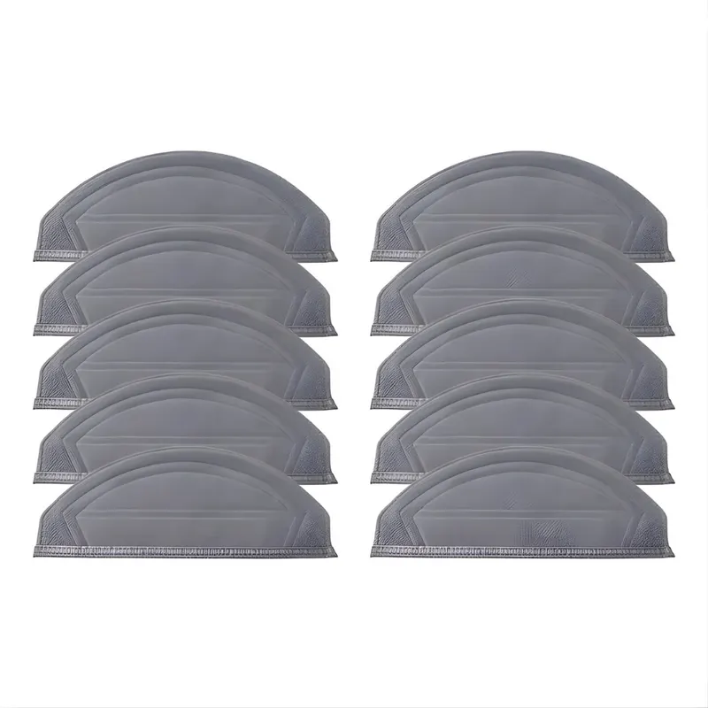
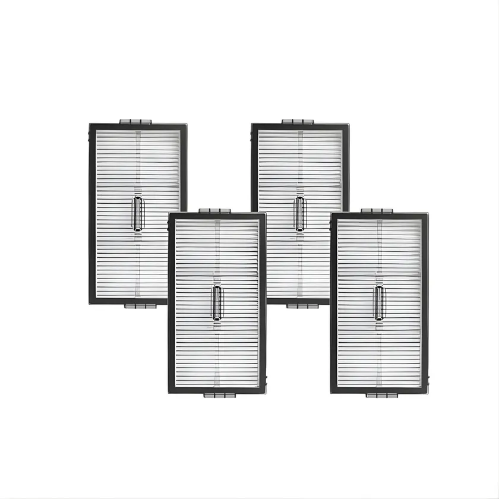
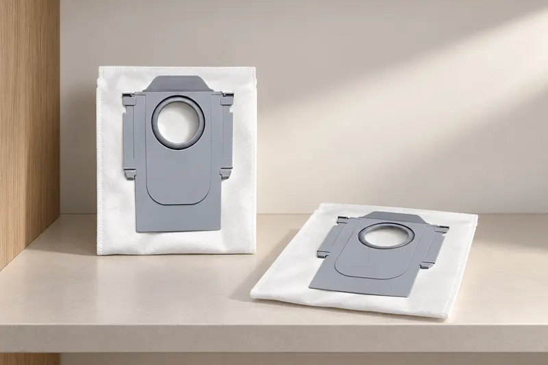

로보락 (Roborock)
제이상점 넾다세일 쿠폰 2장, 발급 시간과 중복 적용 조건
글·구성: 제이상점 · 기종별 1:1 호환 실물 점검 · 교체 주기 비교표 · 스마트스토어 패키지 안내

핵심 관리 · 선택 체크포인트
- 판매자 안내｜로봇청소기 소모품 전문점 제이상점이 공식 행사 안내와 자사 공지 자료를 바탕으로 직접 작성했습니다.
- 2026년 10월 26일~11월 8일 넾다세일 기간에는 넾다세일 상품할인쿠폰과 해외직구 상품중복할인쿠폰을 각각 확인해 주세요.
- 발급 안내 시간은 한국시간 매일 00시·10시·18시이며 선착순입니다.
- 제이상점의 행사 혜택 안내 이미지입니다.
- 넾다세일 상품할인쿠폰에는 네이버플러스 멤버십 조건이 있습니다.
실물 부품 디테일 · 관리 구성 이미지




부품 규격 · 점검 기준표
| 점검 항목 | 기종별 확인 · 관리 기준 |
|---|---|
| 점검 포인트 1 | 판매자 안내｜로봇청소기 소모품 전문점 제이상점이 공식 행사 안내와 자사 공지 자료를 바탕으로 직접 작성했습니다. |
| 점검 포인트 2 | 2026년 10월 26일~11월 8일 넾다세일 기간에는 넾다세일 상품할인쿠폰과 해외직구 상품중복할인쿠폰을 각각 확인해 주세요. |
| 점검 포인트 3 | 발급 안내 시간은 한국시간 매일 00시·10시·18시이며 선착순입니다. |
| 점검 포인트 4 | 제이상점의 행사 혜택 안내 이미지입니다. |
💡 교체 주기가 겹치는 필터·브러시·물걸레·더스트백은 단품 배송비를 여러 번 내기보다 로보락 S10 MaxV Ultra 기간별 세트(3개월·6개월·1년)로 미리 구비해 두면 물세척 후 24시간 교대 건조까지 끊김 없이 관리할 수 있습니다.
자주 묻는 질문 (FAQ)
Q. 제이상점 넾다세일 쿠폰 2장 관리 시 '점검 포인트 1'은 어떻게 점검하나요?
A. 판매자 안내｜로봇청소기 소모품 전문점 제이상점이 공식 행사 안내와 자사 공지 자료를 바탕으로 직접 작성했습니다.
Q. 제이상점 넾다세일 쿠폰 2장 관리 시 '점검 포인트 2'은 어떻게 점검하나요?
A. 2026년 10월 26일~11월 8일 넾다세일 기간에는 넾다세일 상품할인쿠폰과 해외직구 상품중복할인쿠폰을 각각 확인해 주세요.
Q. 제이상점 넾다세일 쿠폰 2장 관리 시 '점검 포인트 3'은 어떻게 점검하나요?
A. 발급 안내 시간은 한국시간 매일 00시·10시·18시이며 선착순입니다.
제이상점 1:1 검수 추천 패키지 · 구매 안내
메인 추천 구성
대표 구성 참고가 70,100원대 (옵션·쿠폰별 스마트스토어 결제 화면 기준)
1년세트1년세트｜호환세제→정품세제 업그레이드6개월세트6개월세트｜호환세제→정품세제 업그레이드3개월세트
☑️ 주문 전 확인해 두면 좋은 제이상점 안심 포인트
· 기종별 1:1 전용 규격 검수: 모델명·연식에 맞는 호환·정품 구성을 검수해 오주문 불안을 줄였습니다.
· 해외직배송 미리 주문 팁: 중국 구매대행·해외직배송 상품이므로 마지막 여분 1개를 꺼내 쓰는 시점에 개인통관고유부호와 함께 여유 있게 주문해 두시면 훨씬 경제적인 비용으로 끊김 없이 교체하실 수 있습니다.
· 기종별 1:1 전용 규격 검수: 모델명·연식에 맞는 호환·정품 구성을 검수해 오주문 불안을 줄였습니다.
· 해외직배송 미리 주문 팁: 중국 구매대행·해외직배송 상품이므로 마지막 여분 1개를 꺼내 쓰는 시점에 개인통관고유부호와 함께 여유 있게 주문해 두시면 훨씬 경제적인 비용으로 끊김 없이 교체하실 수 있습니다.
📖 더 많은 가정 내 사용 스토리와 상세 후기가 궁금하시다면
📱 네이버 블로그 모바일 원문 보기 ↗